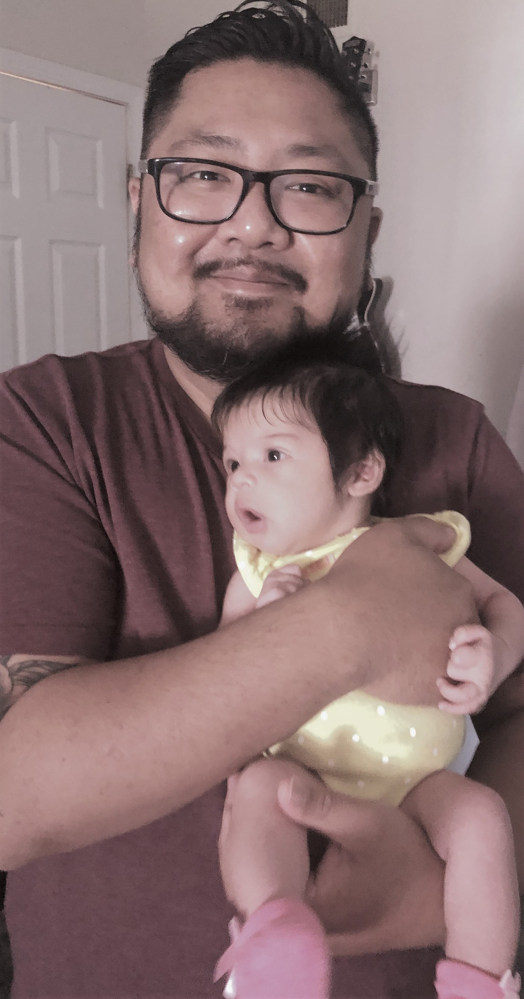

About Me
People keep saying that this bootcamp will probably be one of the most challenging things I have ever done.
And I am here to tell you, that it is 100% true.
I never saw myself as a computer progammer, or wanting to do anything with computers. Ever. Seriously. I can barely read the calender app on my Iphone. I loved those days where I played "Snake" on my Nokia, burning a mix cd for a friend, or had an actual conversation with people in front of you. I am the worst when it comes to technology.
But I've always been a good learner. So I find myself in this class (a 30-something guy who went to three different art schools and took him a decade to get his associate's degree) constantly thinking about computers, and coding, and wanting to see this bootcamp through.
I've spent years playing in bands, writing songs, playing shows, painting and drawing, hating and loving and hating again everything I ever created. Now I find myself completely passionate about something that has never crossed my mind before.
So yes, it is one of the most challenging things I ever done, and I'm loving every minute.